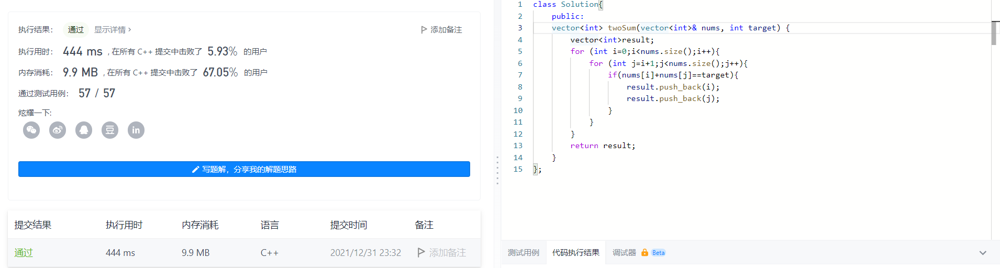
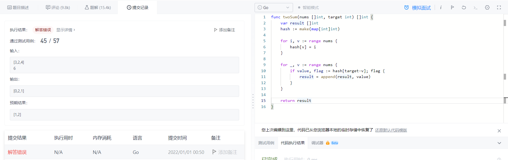

classSolution{ public: vector<int> twoSum(vector<int>& nums, int target){ vector<int>result; for (int i=0;i<nums.size();i++){ for (int j=i+1;j<nums.size();j++){ if(nums[i]+nums[j]==target){ result.push_back(i); result.push_back(j); } } } return result; } };

但👴想不通为啥能这么慢和这么大，只橄榄5.93%为甚么不用Python
im0use割割兴致也来了想用纯C干一架
现在被二重指针和malloc橄榄
还好👴是纯爱战士，不是纯C战士
0x03
相同的暴力法结果Go把Cpp橄榄了，👴对C++的高效率产生了怀疑
世界观崩塌了
functwoSum(nums []int, target int) []int { var result []int for i := 0; i < len(nums); i++ { for j := i + 1; j < len(nums); j++ { if nums[i]+nums[j] == target { result = append(result, i) result = append(result, j) } } } return result }
👴勉强能接受C++内存开销这么大
但👴不能接受C++速度在同一算法下被除了C和Rust的其他语言橄榄
也许这就是高级语言罢
0x04
此时mouse割割还在被纯C橄榄
👴不能只满足于暴力，👴写出来Hash就睡
functwoSum(nums []int, target int) []int { var result []int hash := make(map[int]int)
for i, v := range nums { hash[v] = i }
for _, v := range nums { if value, flag := hash[target-v]; flag { result = append(result, value) } }
return result }
想了半天把value、target和index连接到一起
然后没法自测[3,2,4] 6的情况…

functwoSum(nums []int, target int) []int { var result []int hash := make(map[int]int)
for i, v := range nums { hash[v] = i }
for _, v := range nums { if hash[target-v] == v { continue } if value, flag := hash[target-v]; flag { result = append(result, value) } }